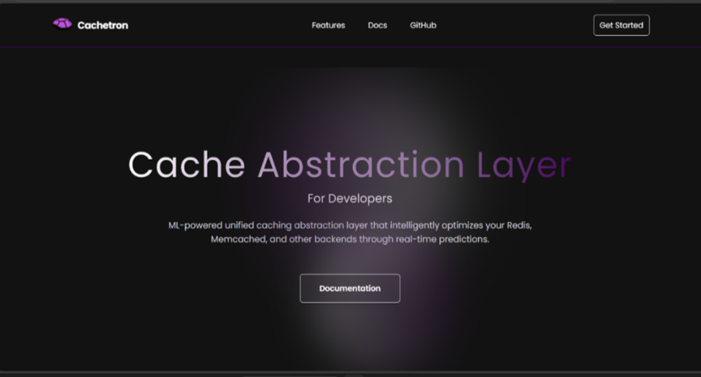
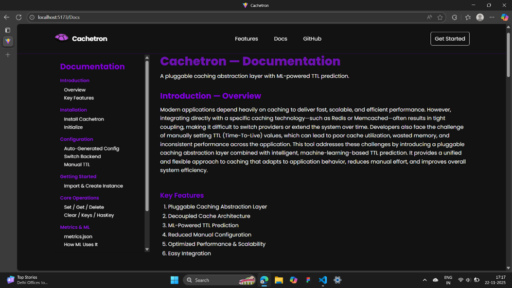
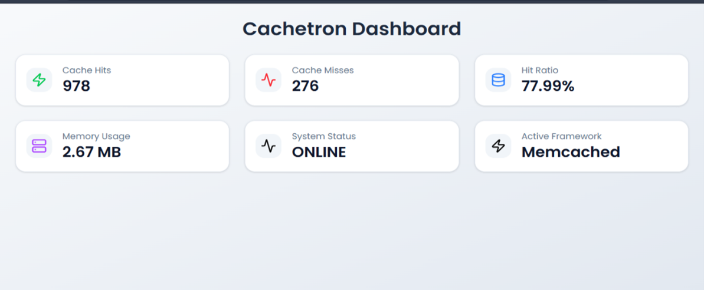
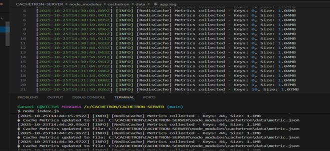
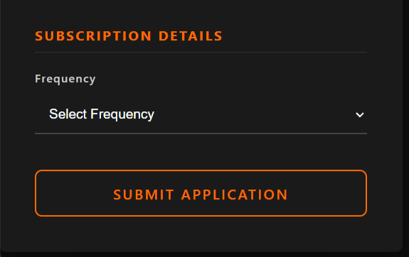

Hi, I'm Hafsa Kauser J
Aspiring Software Developer
Computer Science undergraduate aspiring to begin my career as an Associate Software Engineer, focused on building strong fundamentals, solving practical problems, and continuously improving through hands-on experience.
Let's Talk
About Me
I am a Computer Science undergraduate at Sambhram Institute of Technology (2026) with a CGPA of 8.2, aspiring to begin my career as an Associate Software Engineer. I am focused on building strong fundamentals in software development and continuously improving through hands-on experience. I have experience working with JavaScript, Java, and Python, along with frontend development using React JS.
Skills
Projects
Responsive Landing Page Design
React Js,TypeScript
The landing page of the system provides a professional interface that explains the caching abstraction layer. It shows the documentation page for the Cachetron tool, including installation steps, CLI setup instructions, and the automatically generated configuration structure. This user-friendly documentation helps developers easily understand how to install, configure, and use the caching abstraction layer.


Powered Caching System for Enhanced Performance- A Machine Learning Approach
The project focuses on using machine learning to improve caching performance in software applications. Traditional caching systems like Redis and Memcached are fast but require manual configuration and are tightly connected to application logic. This project solves these problems by developing a pluggable caching abstraction layer that supports multiple caching backends through a single interface and allows switching between them at runtime. It also includes a machine learning module that predicts optimal cache expiry times (TTL) based on usage patterns, helping reduce manual configuration and improve system performance, scalability, and memory usage.
Node js,React js
By introducing a unified caching abstraction layer, the system becomes more flexible, maintainable, and independent of specific technologies like Redis or Memcached. The integration of an ML-based TTL prediction model ensures optimal cache expiry times, reducing memory waste and improving performance. Overall, this approach enhances scalability, boosts efficiency, and minimizes manual configuration efforts for developers.


NewsLetter
The Newsletter Subscription component is a React + TypeScript form that allows users to register their subscription preferences by entering their name, email address, and choosing the newsletter delivery frequency.
React js
Upon submitting the newsletter form, the user’s subscription details are captured and logged in the browser console. The form then clears all input fields and displays a confirmation message on the UI indicating that the subscription was recorded successfully. This provides immediate feedback to the user while maintaining a smooth, reload-free interaction experience.

